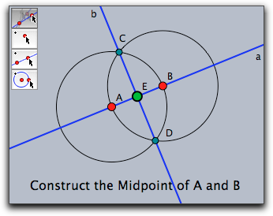
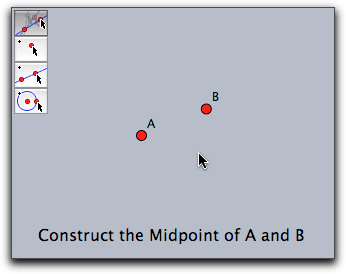
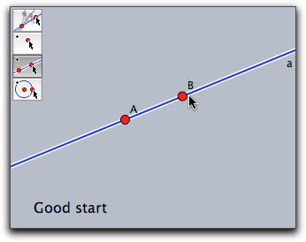
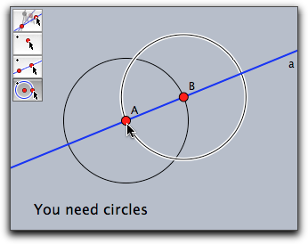
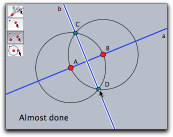
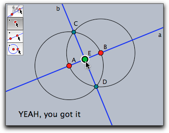

Interactive Exercises
A Little Cinderella History
One of the main features of the older versions of Cinderella (up to 1.4) was the ability to easily create interactive student exercises in elementary geometry. A typical such exercise may for instance ask for the construction of the midpoint of two given points. The student was given an interactive web page in which just the two points (say A and B) are given along with a certain set of construction tools to solve the exercise. While he solved the exercise, the automatic prover in Cinderella monitored his activities and provided useful hints and comments. Finally, when the student had successfully mastered the construction task he was prompted a success message.
Unfortunately, this functionality was no longer available as of version 2.0. There were several reasons why we discontinued this feature. One of them was our goal to to merge student exercises and scripting facilities to support more advanced and flexible exercise formats. Another reason was that only a small fraction of users actually used the possibilities of creating exercises.
With the current version we again provide a possibility to create interactive exercises by including the operator
createtool(...). This and the constant monitoring of the construction by the integrated proving engine is the key to interactive exercises with automatic checking of students' answers. In contrast to the old version of Cinderella there is no longer an exercise editor, but the exercise must be produced by writing a suitable script. Below we show that this not only provides the old functionality for exercises, but also adds the power and versatility of CindyScript.In this section we will describe the basic techniques that are necessary to create such exercises, along with some technical explanations. We will do this for a very simple example and start from scratch. On our website at http://cinderella.de
Exporting Tools
Our task is to generate an exercise that asks for the construction of the midpoint of two given points A and B. The student should be asked to solve this by using lines, points and circles. The first task is to create a toolbar with the essential tools for the exercise. For this, we use the
createtool(...) operator as described earlier. We want to provide a small collection of tools essential for the construction. To achieve this, we add the following statement in the init block of CindyScript:createtool(["Move","Point","Line","Circle"],2,2);
We also add the two points manually that should serve as the start of the exercise. Now our construction looks as follows:
 |
Providing a Sample Construction
As a next step we provide a sample construction for the exercise (construct the midpoint). This sample construction will later be used as a source to provide hints for the student. The construction is done manually using the construction tools. We also use the Inspector to make the construction look a little nicer. After this the construction may look as follows.
 |
Adding the Exercise Text
As a next step we are going to display a text that asks the student to solve the exercise. We will use this text later on also to give some helpful messages while the student is actually solving the exercise. So we will separate the actual message from the statement that displays it. There are several ways to do this, here we will in init enter a line
message="Construct the Midpoint of A and B";
In draw we enter a line like
drawtext((-8,0),message);
Going back to the construction our example looks like this:
 |
Hiding the Sample Construction
As mentioned before, the sample construction will only serve as a template that is compared to the student's solution. So we have to hide this part of the construction, except for the starting points. We could either do this manually by using the Inspector. Alternatively we can add a line of script to the init block that makes all elements but A and B invisible automatically.
apply(allelements()--[A,B],el,el.visible=false);
After this the exercise is in perfect shape for the student:
 |
Providing a Success Message
Now comes the tricky part. We want the student gets a success message when he solved the exercise. For this you have to know the following important fact about Cinderella: Whenever an element is constructed that is already present then Cinderella's proving engine will make sure that the old element is actually re-used and no additional superfluous double element is added. This mechanism even works if the old element was invisible. In this case the visibility flag of the old element is simply turned back the
true state. In our case, if the student constructs the midpoint of A and B in some correct way, the prover will make sure that the old invisible point E that is already present in the construction will be re-used. As the prover accepts all points that are always at the same position as E, regardless of their construction, the student may provide his own creative construction for the midpoint and still be awarded with the success message.So the only thing we have to do for showing the success message is to check whether point E becomes visible. We can do so by adding the following line of code to the draw script before the message is printed:
if(E.visible,message="YEAH, you got it")
If the student manages to construct the midpoint (by any construction!) then automatically point E will become visible and the message
"YEAH, you got it" will be shown.Giving Intermediate Comments
We can do even better. We can use the sample construction to provide a message whenever the student constructs one of the auxiliary elements of it. For this, we will replace the
if(...) statement of the last section by a little program that tests which elements of our construction are already visible and adjusts the message accordingly. Here is a code example demonstrating how to do that (we provide the entire code for the draw section.)clrscr(); chain=[ [a,"Good start"], [C0,"You need circles"], [C1,"You need circles"], [b,"Almost done"], [E,"YEAH, you got it"] ]; visible=select(allelements(),#.visible); found=select(chain,el,contains(visible,el_1)); if(found!=[], message=found_(-1)_2; ); drawtext((-8,0),message);
In the list
chain we store pairs of elements and the associated texts that should be shown if the element is constructed. The linesvisible=select(allelements(),#.visible); found=select(chain,el,contains(visi,el_1));
collect all elements of
chain that are already visible in the list found. Finally, the following lines of code take the last element of this list (the one that was most recently constructed) and stores the associated comment in message:if(found!=[], message=found_(-1)_2; );
This message is then shown by:
drawtext((-8,0),message);
What the Student Gets
If the student now solves the exercise in the standard way he will have the following stages of his construction:




Exporting
Finally, we will export this exercise to the web as described in the section on HTML Export. After this the interactive webpage is easily usable as a general interactive student exercise. There are more elaborate patterns of how to relate the hints to parts of the original construction. On our webpage http://cinderella.de
Page last modified on Monday 05 of September, 2011 [09:15:03 UTC].
The original document is available at
http://doc.cinderella.de/tiki-index.php?page=Interactive%20Exercises